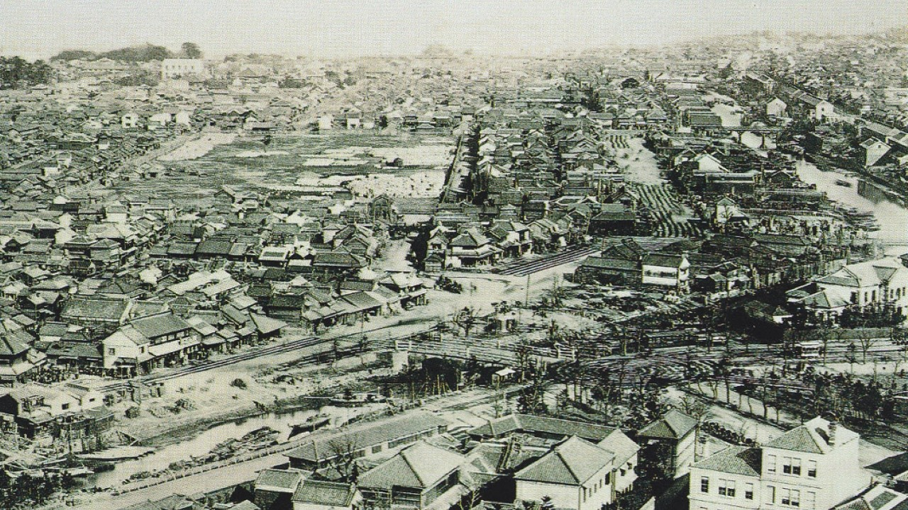
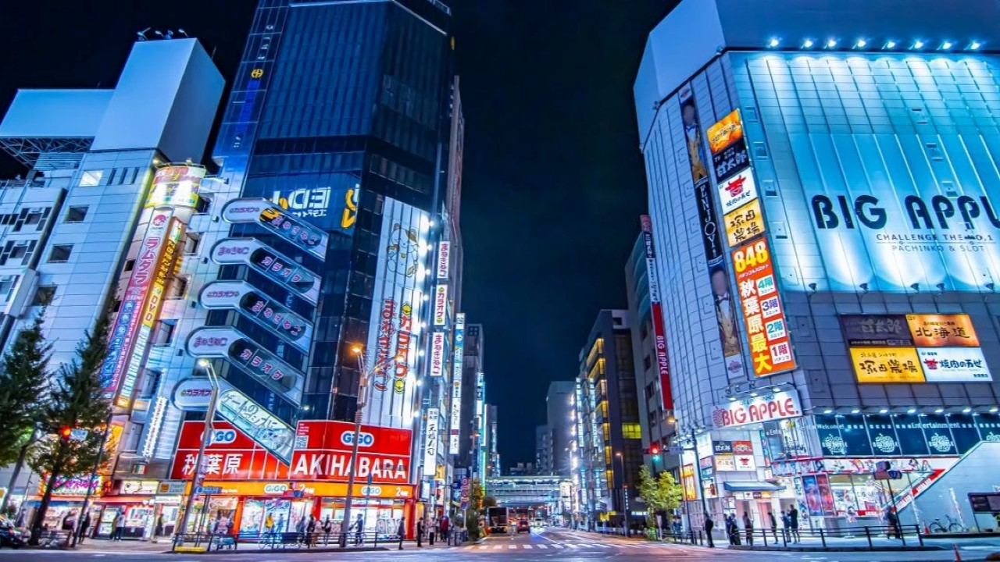
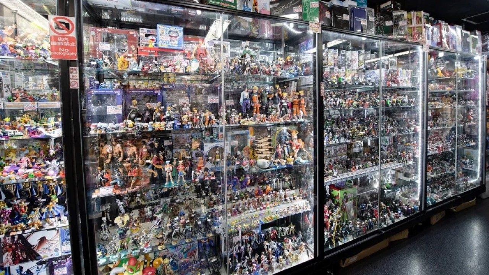
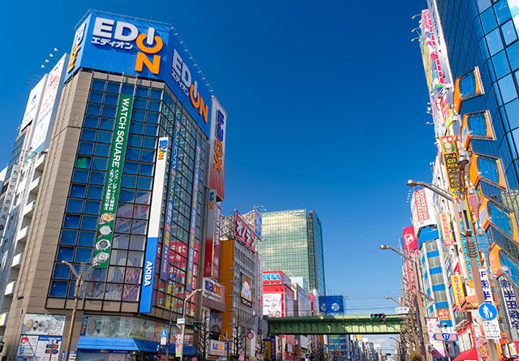
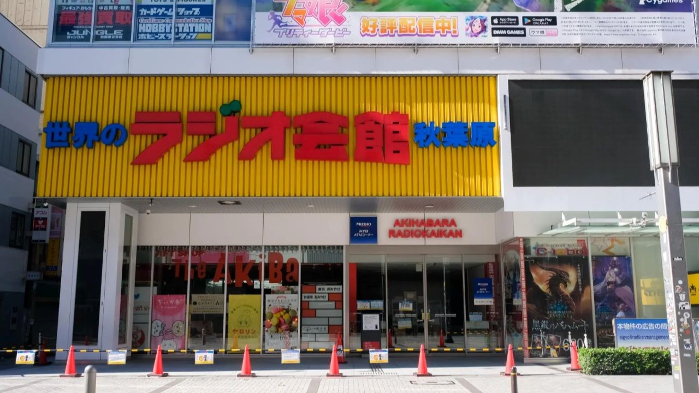
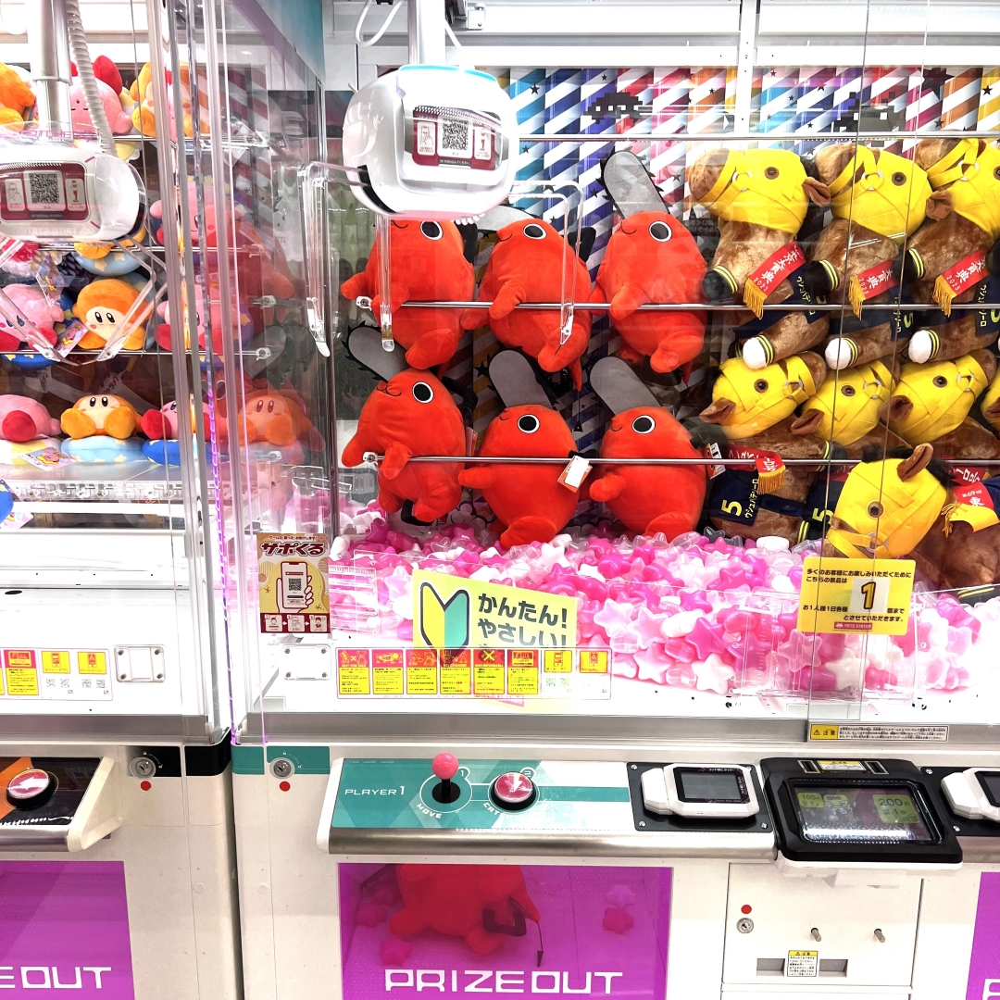
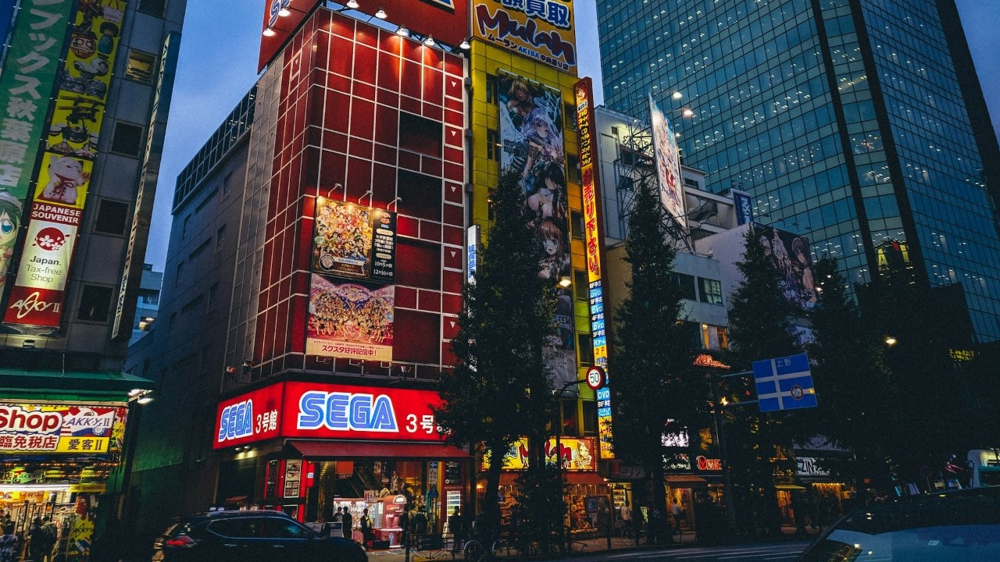
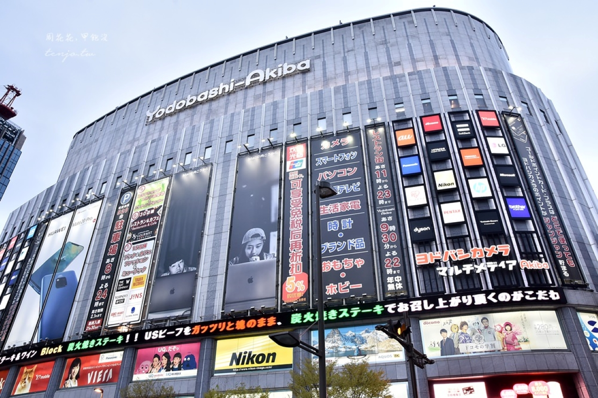
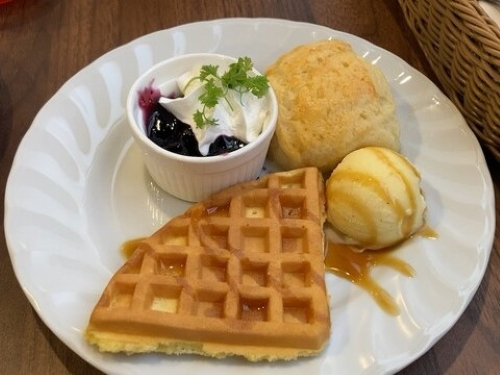

關於秋葉原
➢ 秋葉原的歷史與現在
秋葉原的變遷（江戶到戰後）
秋葉原的變遷（江戶到戰後）
秋葉原在400年前左右的江戶時代，是下級武士的住家所林立的地區。現今的秋葉原的原型是第二次世界大戰後所建立的。秋葉原周邊林立的收音機零件的黑市，在1951年頒布的露天整理令下，室外的攤販才收納到鐵路的鐵橋之下。

01
秋葉原在400年前左右的江戶時代，是下級武士的住家所林立的地區。現今的秋葉原的原型是第二次世界大戰後所建立的。秋葉原周邊林立的收音機零件的黑市，在1951年頒布的露天整理令下，室外的攤販才收納到鐵路的鐵橋之下。
秋葉原的變遷（高度成長期以後）

02
秋葉原的變遷（高度成長期以後）
那之後，秋葉原隨著日本經濟的高度成長，轉變成電視和冰箱、洗衣機等的家電、電腦等都便宜販售的日本最大的電器街。販售給喜愛自行組裝工作者的電子零件商店也越來越多。很多人為了購買零件、家電而拜訪了秋葉原。
現在的秋葉原
現在的秋葉原
雖然是以電器街開始發展的秋葉原，但漫畫、動畫粉絲的專門店卻逐漸增加中。粉絲們所創作的「同人誌」的專門店也是從秋葉原誕生的。而且，創立偶像的專用劇場，秋葉原以作為現在偶像熱潮的中心地而聞名。
03
雖然是以電器街開始發展的秋葉原，但漫畫、動畫粉絲的專門店卻逐漸增加中。粉絲們所創作的「同人誌」的專門店也是從秋葉原誕生的。而且，創立偶像的專用劇場，秋葉原以作為現在偶像熱潮的中心地而聞名。
➢ 秋葉原的特色
秋葉原是世界上最大的電器商業街區，沿街分佈著幾百家電器店，出售最新型的電腦、相機、電視機、手機、家用電器等，品種相當齊全。
這裡也是日本動漫文化的發祥地，遍地都是動畫、漫畫、電玩、手辦商店，還有很多偶像系店舖、動漫咖啡館、女僕咖啡館等，常能看到Cosplay的少男少女。

➢ 交通方式
搭乘JR山手線、京濱東北線、總武線或東京Metro地鐵日比谷線、筑波快線皆可輕鬆抵達秋葉原站。
從羽田機場前往：搭乘電車45分鐘。
從成田機場前往：搭乘電車1小時30分鐘。
從新宿站前往：搭乘JR總武線18分鐘至「秋葉原」站。
從東京站前往：搭乘JR山手線4分鐘至「秋葉原」站。
景點介紹
1. 神田神明神社
神田神明歷史悠久，據說對結良緣、保佑商業興隆及消災除厄都特別靈驗，還是勝負運的守護神。神社地處商務辦公區，新年之際會有許多公司職員來這裡參加初詣參拜，祈求工作順利、事業運上升。
神社也是動漫迷的朝聖地，在這裡可以買到很多和動漫相關的繪馬、御守及各種周邊商品，也有針對電腦保護的御守。
2. 秋葉原電氣街
秋葉原集結了大型店家和大小各種型態的電氣店，是日本最具代表性的電器街。以「AKIBA」暱稱而廣為民眾熟知，不僅日本國內，也是深受世界各國矚目的人氣景點。聚集了家電製品、電腦、智慧型手機等匯集了數位機器中最先進技街的商品，以及動漫、電玩、公仔、鐵道模型等，是知名的流行文化聖地。

3. 秋葉原無線電會館
自1950年開幕以來，長年來一直都是秋葉原站前遠近馳名的地標。
地上10層樓、地下2層樓的大樓裡，不僅集結了超過30家興趣嗜好、動畫、漫畫、遊戲、模型公仔，和秋葉原規模最大的集換式卡片等秋葉原文化的專賣店，另外還有Beer Hall和便利商店。

購物指南
2. GIGO
GiGO遊戲中心在秋葉原共有4間分店，以3號店規模最大，有夾娃娃機、拍貼機、音樂遊戲，最大特色是6F有各式各樣的復古街機 (快打旋風、賽車、射擊遊戲等)，超適合親子同樂的秋葉原景點。


3. Yodobashi(友都八喜) Akiba秋葉原
秋葉原佔地最大的電器賣場友都八喜秋葉原，想得到的電器都能在這裡找到。
嫌男生逛電器沒趣，7F還有ABC-MART、DAISO、UNIQLO可以逛，8F更是網羅了Steak Lodge、京都勝牛、The French Toast Factory、うな匠鰻魚飯、和幸豬排等30家秋葉原美食，完全不用怕無聊。

美食推薦
2. CURE MAID CAFÉ
CURE MAID CAFÉ是於2001年開幕的日本第一家女僕咖啡廳。女僕們穿著古典的制服提供服務的風格，就是源自於此。也曾在動漫作品中登場過，被粉絲們視為「聖地」，擁有極高的人氣。從歐姆蛋飯、義大利麵等份量十足的餐點，到精心製作的甜點，餐食、飲料類的選擇豐富。還被日本紅茶協會認定為「好喝紅茶的店家」。店內使用多款餐具將這些餐點和飲品襯托得更為精緻。
